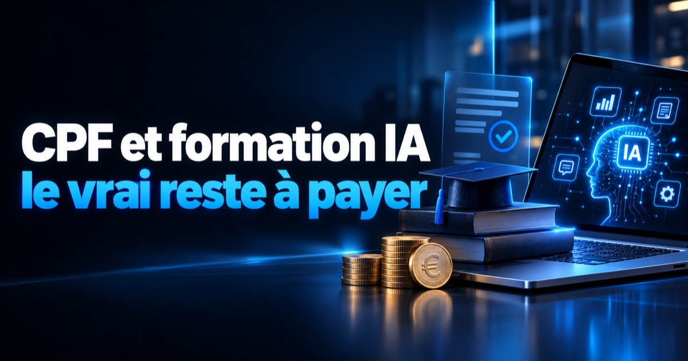

Publié le 5 octobre 2026. Montants vérifiés à cette date sur les sites officiels cités ; ils sont révisés chaque année.
La réponse courte : le CPF finance une certification, pas « une formation IA »
Une formation à l'intelligence artificielle n'est finançable par le CPF que si elle prépare à une certification enregistrée par France compétences et si elle est vendue sur Mon Compte Formation par un organisme certifié Qualiopi. En 2026, pour les certifications d'usage de l'IA, la prise en charge est plafonnée à 1 500 € et 150 € restent à votre charge. Une formation sur mesure, construite sur les outils de votre entreprise, n'entre pas dans ce cadre.
Le CPF est un droit attaché à la personne, pas un budget de l'entreprise : il sert, selon la fiche Service-Public sur le compte personnel de formation, à suivre une formation certifiante ou certaines actions précises comme le bilan de compétences. La question utile pour un dirigeant n'est donc pas « cette formation IA est-elle bonne ? » mais « débouche-t-elle sur une certification reconnue, et est-ce ce dont j'ai besoin ? ».
Les trois conditions pour qu'une formation IA passe au CPF
Trois conditions doivent être réunies en même temps : une certification enregistrée, un organisme certifié Qualiopi, et un achat réalisé sur la plateforme officielle. Il suffit qu'une seule manque pour que le CPF ne puisse pas payer.
- Une certification enregistrée. La formation doit préparer à un diplôme ou un titre du Répertoire national des certifications professionnelles (RNCP), ou à une certification du Répertoire spécifique (RS), tous deux tenus par France compétences. Les certifications d'usage de l'IA générative relèvent du Répertoire spécifique — par exemple la fiche RS7232, « Utiliser l'intelligence artificielle générative pour améliorer son efficacité professionnelle par un usage responsable », active et enregistrée jusqu'au 18 juillet 2028 ;
- Un organisme certifié Qualiopi. La certification qualité Qualiopi est exigée des prestataires qui veulent accéder aux fonds publics ou mutualisés de la formation : CPF, opérateurs de compétences, fonds d'assurance formation ;
- Un achat sur Mon Compte Formation. L'inscription et le paiement passent par le site ou l'application officielle, avec votre identité numérique. Personne ne peut mobiliser votre CPF à votre place, et le démarchage commercial pour des formations CPF est interdit par la loi du 19 décembre 2022 : un appel ou un SMS qui vous « rappelle vos droits » n'est jamais une démarche officielle.
Avant de vous inscrire, vérifiez vous-même le numéro de la certification annoncée dans le répertoire de France compétences : la fiche indique si elle est active et jusqu'à quelle date. Une certification arrivée à échéance n'est plus finançable.
Ce que le CPF paie réellement en 2026 : 1 500 € au plus, et 150 € pour vous
Pour une certification du Répertoire spécifique, vous pouvez utiliser au maximum 1 500 € de votre CPF, et vous payez dans tous les cas une participation obligatoire de 150 €. Avoir 4 000 € sur son compte ne change rien au plafond : au-delà, la différence est à votre charge ou à celle d'un cofinanceur.
- Le plafond de 1 500 €. D'après la fiche Service-Public (vérifiée le 27 juin 2026), les formations sanctionnées par une certification du Répertoire spécifique sont limitées à 1 500 € de droits CPF — seul le certificat CléA y échappe. Ce plafond porte sur les droits issus de l'alimentation annuelle du compte, pas sur les cofinancements éventuels. Les diplômes et titres du RNCP ne sont pas visés par ce plafond ;
- La participation de 150 €. Fixée à 100 € à sa création en mai 2024, elle est de 150 € depuis le 1er avril 2026, selon Mon Compte Formation. Elle s'applique même si vos droits couvrent tout le prix : pour une formation à 1 000 €, vous mobilisez 850 € de droits et vous payez 150 € ;
- Les deux cas où vous ne la payez pas vous-même. Si votre employeur abonde votre CPF, la participation ne s'applique pas ; et votre employeur ou votre opérateur de compétences peut la prendre en charge. Un organisme de formation, lui, n'a pas le droit de vous proposer de la rembourser.
Faites le calcul avant de comparer les catalogues. Une formation certifiante IA affichée à 2 400 € ne vous coûte pas « zéro grâce au CPF » : le CPF en paie 1 500 € au plus, il reste 900 € à financer, participation comprise.
Dirigeant : votre statut décide du guichet
Un dirigeant non salarié a bien un CPF, mais son premier guichet est souvent son fonds d'assurance formation ; un dirigeant qui emploie des salariés dispose en plus, pour eux, de l'opérateur de compétences de sa branche. Le bon financement dépend donc de qui se forme, pas du sujet de la formation.
- Vous êtes travailleur indépendant ou dirigeant non salarié. En contrepartie de la contribution à la formation professionnelle (CFP), votre CPF est crédité de 500 € maximum par année de travail, jusqu'à 5 000 € maximum, et vous pouvez demander une prise en charge à votre fonds d'assurance formation (FAF). La fiche officielle « Prise en charge des formations des travailleurs indépendants » donne la répartition : Agefice pour les commerçants et dirigeants non salariés du commerce, de l'industrie et des services, FIF-PL pour les professions libérales, FAFCEA pour les artisans ;
- La démarche auprès du FAF. Il faut l'attestation de paiement de la CFP, disponible dans votre espace Urssaf, et une demande déposée avant la formation — la même fiche recommande au moins un mois d'avance, et précise qu'une demande hors délai est refusée. Chaque FAF fixe ses propres thèmes et montants : consultez le vôtre avant de choisir. Un micro-entrepreneur sans chiffre d'affaires pendant douze mois consécutifs n'a pas droit à cette prise en charge ;
- Vous êtes dirigeant assimilé salarié. Président de SAS ou gérant minoritaire, votre situation dépend de votre rémunération et de vos cotisations : vérifiez vos droits directement sur Mon Compte Formation plutôt que de vous fier à une règle générale ;
- Vous voulez former vos salariés. Leur CPF leur appartient : vous ne pouvez pas le mobiliser à leur place. La voie de l'entreprise est le plan de développement des compétences, avec une prise en charge possible par votre opérateur de compétences (OPCO) selon la taille de l'entreprise et les règles de la branche. Là aussi, l'organisme doit être certifié Qualiopi.
Ce que le CPF ne finance pas : la formation construite sur votre entreprise
Le CPF ne finance pas une formation sur mesure, bâtie sur vos outils, vos documents et vos cas : elle ne débouche sur aucune certification enregistrée. C'est la limite du dispositif pour un dirigeant, parce que c'est souvent ce format-là qui change le travail de l'équipe le lundi matin.
Une certification valide des compétences définies à l'avance, identiques pour tous les candidats. C'est sa force — elle est reconnue et comparable — et sa contrainte : le programme ne s'adapte pas à votre logiciel de devis, à vos modèles de courriers ni à vos règles de confidentialité. Les deux formats ne répondent pas au même besoin :
- La certification finançable convient à une personne qui veut une compétence attestée, valorisable sur un CV ou dans une évolution de poste, et qui accepte un programme standard ;
- La formation sur mesure convient à une entreprise qui veut que son équipe utilise l'IA sur ses propres tâches, avec ses propres données, dans un cadre fixé par le dirigeant. Elle se paie sur le budget de l'entreprise.
Les deux peuvent se suivre : une formation sur mesure pour mettre l'équipe au travail, puis une certification pour le collaborateur qui veut faire reconnaître ce qu'il sait faire.
Et les formations de Fiducia IA ? Elles ne sont pas finançables par le CPF
Non : Fiducia IA n'est pas un organisme certifié Qualiopi, et nos formations ne préparent pas à une certification enregistrée. Elles ne sont donc finançables ni par le CPF, ni par un OPCO, ni par un fonds d'assurance formation. Nous préférons l'écrire ici plutôt que de vous le faire découvrir au moment du devis.
Ce que nous proposons est l'autre format : une formation IA en entreprise, individuelle ou en groupe, construite sur votre métier et vos outils, sans dossier de financement à monter. Son contenu et son prix sont établis après un audit de 30 minutes, dans un devis ferme. Si votre besoin est une certification finançable, cet audit vous le dira aussi — et nous vous orienterons vers le répertoire de France compétences plutôt que vers notre offre.
La formation est rarement une fin en soi. Elle précède souvent un outil : un agent IA ou une automatisation sur mesure, dont la différence avec un simple chatbot est expliquée dans notre article agent IA, chatbot ou assistant virtuel. Et quand l'équipe doit reprendre la main sur ses propres automatisations, nous la formons sur ses workflows dans le cadre de notre accompagnement n8n.
Comment choisir : trois questions avant de chercher un financement
Commencez par le besoin, pas par le financement : une formation financée qui ne sert à rien coûte quand même le temps de la personne formée. Trois questions suffisent à trancher.
- Qui se forme, et pour quoi faire ? Une personne qui veut une compétence reconnue : regardez les certifications. Une équipe qui doit changer sa façon de travailler : regardez le sur-mesure ;
- Le programme porte-t-il sur vos tâches réelles ? Demandez le programme détaillé et le référentiel de la certification. S'il ne recoupe pas ce que vous faites chaque semaine, le financement ne compensera pas l'écart ;
- Quel est le coût complet ? Prix de la formation, moins la part CPF plafonnée, plus les 150 €, plus les heures passées en formation. C'est ce total qu'il faut comparer au prix d'une formation non financée mais plus courte et ciblée.
Toutes nos pages sur le sujet — formation, agents, usages — sont regroupées dans la rubrique intelligence artificielle en entreprise.
Questions fréquentes
Une formation à l'IA est-elle éligible au CPF ?
Oui, à une condition : qu'elle prépare à une certification enregistrée par France compétences, au RNCP ou au Répertoire spécifique, et qu'elle soit vendue sur Mon Compte Formation par un organisme certifié Qualiopi. Une formation IA sans certification à la clé, même excellente, n'est pas finançable par le CPF.
Combien le CPF prend-il en charge pour une formation IA ?
Pour une certification du Répertoire spécifique, catégorie dont relèvent les certifications d'usage de l'IA générative, vous pouvez utiliser au maximum 1 500 € de votre CPF, selon la fiche Service-Public vérifiée le 27 juin 2026. Une participation obligatoire de 150 € reste en plus à votre charge depuis le 1er avril 2026.
Peut-on éviter les 150 € de participation obligatoire ?
Oui dans un cas précis : si votre employeur abonde votre CPF, vous n'êtes pas concerné par cette participation. Votre employeur ou votre opérateur de compétences peut aussi la prendre en charge. En revanche, un organisme de formation n'a pas le droit de vous proposer de la rembourser.
Un dirigeant non salarié a-t-il un CPF ?
Oui. Le travailleur indépendant qui verse la contribution à la formation professionnelle a un CPF crédité de 500 € maximum par année de travail, jusqu'à 5 000 € maximum. Il peut aussi demander une prise en charge à son fonds d'assurance formation, qui dépend de son activité : Agefice, FIF-PL, FAFCEA notamment.
Les formations de Fiducia IA sont-elles finançables par le CPF ?
Non. Fiducia IA n'est pas certifié Qualiopi et nos formations ne préparent pas à une certification enregistrée : elles ne sont finançables ni par le CPF, ni par un OPCO, ni par un fonds d'assurance formation. Ce sont des formations sur mesure, construites sur les outils et les cas de votre entreprise, payées directement par celle-ci.